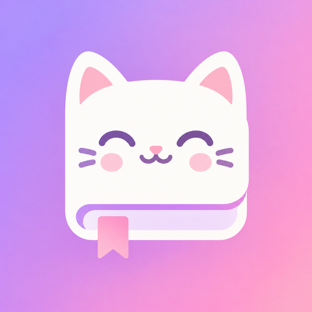

เหมียวไดอารี่
รุ่นทดสอบสำหรับ Android
⬇️ ดาวน์โหลดแอป (APK)- กดปุ่มด้านบนใน Chrome
- ถ้า Chrome ถามว่า "ไฟล์นี้อาจเป็นอันตราย" ให้กด ดาวน์โหลดต่อ / เก็บไว้
- กด เปิด เมื่อโหลดเสร็จ (หรือเปิดจากแอป ไฟล์ → Download)
- ถ้าเตือน "ไม่อนุญาตจากแหล่งนี้" → การตั้งค่า → เปิด อนุญาตจากแหล่งนี้
- Play Protect เตือน → ติดตั้งต่อไป
💻 ใช้บนคอมพิวเตอร์
เปิดเหมียวไดอารี่บนคอม- เปิดลิงก์ด้านบนใน Chrome หรือ Microsoft Edge
- กดไอคอน ติดตั้ง (รูปจอมีลูกศร) ท้ายช่องที่อยู่เว็บ หรือ ☰ เมนูในแอป → 💻 ติดตั้งลงคอม
- เหมียวไดอารี่จะเปิดเป็นหน้าต่างของตัวเอง มีไอคอนบนเดสก์ท็อปและทาสก์บาร์
- เข้าสู่ระบบ Google บัญชีเดียวกับมือถือ โน้ตจะซิงก์กันเอง